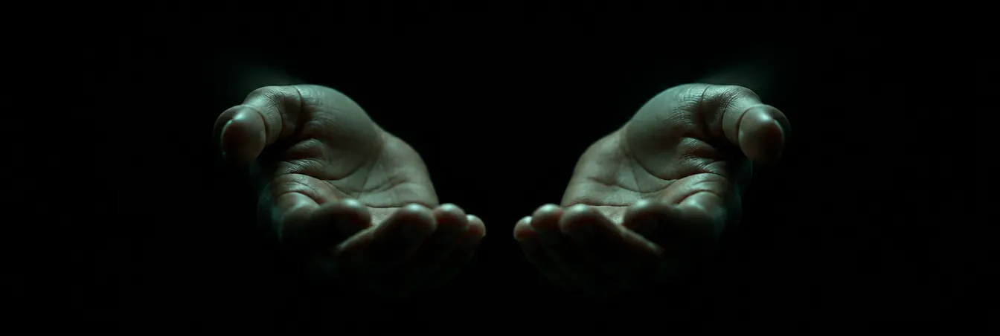

Выбери свой путь.

ПУТЬ 1 / ДОМА
Помочь себе дома, в своём ритме.
Метод ОЗОТЭНС: карманный прибор ТЭНС, электродный крем OZOTENS 30% и фигурный электрод под нужную область - спину, шею, колено, плечо. Процедуру делают дома, по инструкции.
- Один прибор подходит ко всем электродам.
- Электрод выбирают под область тела.
- Перед началом - разговор со специалистом: у метода есть противопоказания.
Имеются противопоказания. Необходимо проконсультироваться со специалистом. Результат индивидуален.
ПУТЬ 2 / К СПЕЦИАЛИСТУ
Прийти к тому, кто посмотрит вживую.
Озонотерапию проводят в клиниках и кабинетах врачи, которые прошли обучение. Компания Медозонс ведёт список клиник по городам, где работают её аппараты и специалисты, обученные компанией.
Хороший первый шаг, если боль давно, если не уверен, что можно самому, или если просто хочется, чтобы рядом был врач.
Список ведёт компания Медозонс. Решение о процедурах принимает врач после осмотра.
ПУТЬ 3 / СВОЙ КАБИНЕТ
Стать тем, к кому приходят.
Для врачей и клиник, которые хотят добавить озонотерапию. Медозонс производит аппараты в Нижнем Новгороде с 1990-х, комплектует оснащением и учит: курс «Основы озонотерапии» проводит Ассоциация российских озонотерапевтов.
- Аппарат: МЕДОЗОНС ПРО-01 или БЬЮТИ.
- Оснащение наборами, одноразовое и многоразовое.
- Путь с нуля разобран по шагам: помещение, озонатор, экономика.
Какой бы путь ты ни выбрал - начни сегодня.
И начни с разговора со специалистом. Тело одно, и оно долго терпело.